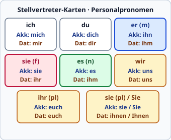

Dative Personal Pronouns
Learn with an AI tutor
An AI tutor explains this page to you and helps you with the exercises. Choose your assistant:
Open with Claude Open with ChatGPT Open with Mistral Vibe
You use your own account with the provider. The assistant is not offered by lernapps.net: lernapps only provides the content and the exercises. The choice holds for all pages, on this device only.
Stand-in Cards: Now with Dative
Our Stand-in Cards now get their dative row! Pay close attention to the difference between accusative (mich, dich, ihn, sie) and dative (mir, dir, ihm, ihr, ihnen). Only uns and euch stay identical in both cases.

© CC0-1.0All Stand-in Cards side by side: Accusative (blue) vs. Dative (amber).
Accusative vs. Dative Side by Side
Compare: Ich sehe ihn. (Whom? Accusative) — Ich gebe ihm das Buch. (To whom? Dative). Peter besucht sie (Mina). — Peter schenkt ihr eine Karte.
Practice
Exercise
Solution
Right answer: ich – mir; du – dir; er (Lukas) – ihm; sie (Mina) – ihr; sie (the Webers) – ihnen
The dative pronouns are *mir, dir, ihm, ihr, ihm, uns, euch, ihnen, Ihnen*.
Exercise
Accusative or dative? Choose the right Stand-in Card.
- Nadia gives me (ich) a pencil. → Nadia gibt … einen Bleistift.
- Peter visits him (Lukas) after school. → Peter besucht … nach der Schule.
- Lukas lends her (Nadia) his bike. → Lukas leiht … sein Fahrrad.
- Herr Braun explains the task to us (wir). → Herr Braun erklärt … die Aufgabe.
Solution
- Nadia gibt mir einen Bleistift.
- Peter besucht ihn nach der Schule.
- Lukas leiht ihr sein Fahrrad.
- Herr Braun erklärt uns die Aufgabe.
Ask about the role: recipient (Wem?) → dative (mir, ihr, uns); direct object (Wen?) → accusative (ihn).
Exercise
Fill in the right dative pronoun (mir, dir, ihm, ihr, ihnen, Ihnen).
- Lukas shows me (ich) the school in Lindenberg. → Lukas zeigt … die Schule in Lindenberg.
- Peter buys her (Mina) a book. → Peter kauft … ein Buch.
- Nadia writes him (Lukas) a message. → Nadia schreibt … eine Nachricht.
- Peter brings them (the Webers) bread rolls. → Peter bringt … Brötchen.
Solution
- Lukas zeigt mir die Schule in Lindenberg.
- Peter kauft ihr ein Buch.
- Nadia schreibt ihm eine Nachricht.
- Peter bringt ihnen Brötchen.
Recipients (to whom?) always use the dative cards: mir, dir, ihm, ihr, uns, euch, ihnen, Ihnen.
Exercise
Solution
Ich danke Ihnen, Herr Braun! right answer
Correct! Formal *Ihnen* (dative of *Sie*) is always capitalized.
Ich danke ihnen, Herr Braun!
Lowercase *ihnen* means *them* (plural). Formal address requires capital *Ihnen*.
Ich danke Sie, Herr Braun!
*danken* takes the dative → *Ihnen*, not *Sie*.
The dative of formal *Sie* is always capitalized *Ihnen*.
Found a mistake or have an idea for this app?